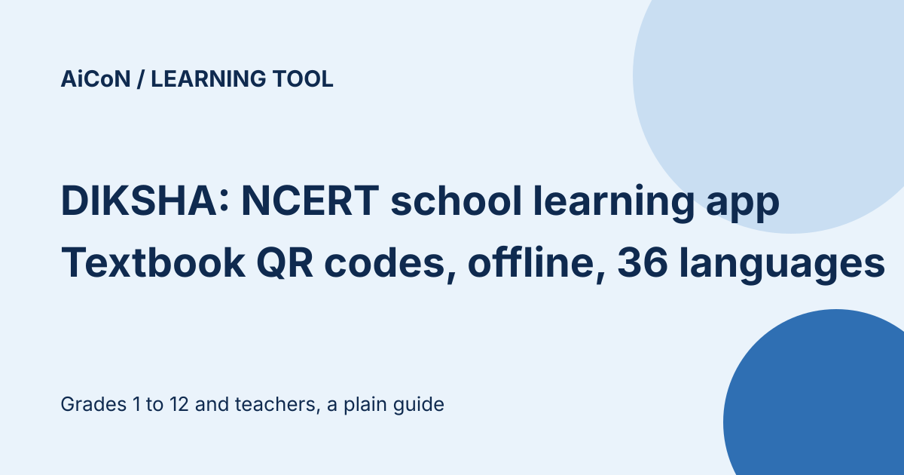

DIKSHA: NCERT's school learning app, with textbook QR codes and offline downloads
DIKSHA is a national school-learning platform run by NCERT under the Ministry of Education. It has lessons, courses, quizzes and textbook content for Grades 1 to 12 and teachers, with platform content in 36 Indian languages. App menus have a separate language list; this does not mean every lesson or course exists in all 36 languages. You can use the mobile app as a guest, with no sign-in, and download content to use offline.

What is on DIKSHA?
The home page lets you browse by subject, by grade stage (Foundational, Preparatory, Middle and Secondary) and by state, board or tenant, including NCERT. It also lists focus areas such as NIPUN Bharat for reading and numeracy, Bhasha Sangam for basic sentences in 22 Indian languages, and content for children with special needs.
What can the app do?
- Use as a guest or sign in
- Read, watch and search content online, or download supported content to use offline
- Scan the QR code printed in textbooks to open the linked lessons
- Enrol in available courses; certificates depend on the course and its completion rules, not merely opening a lesson
Textbook QR codes
Many textbooks carry a QR code on each unit. Open the DIKSHA app, tap the scanner icon on the home page and point it at the code. If several resources are linked, you get a list. QR scanning also works for a guest user and on a laptop using Chrome.
Downloads and licence
Only content hosted on DIKSHA itself can be downloaded (formats include PDF, MP4, EPUB and H5P). External content can be viewed in the app's player but not saved. DIKSHA says NCERT textbooks are licensed CC BY-NC-ND and its other resources CC BY-NC-SA, so they are for non-commercial use with attribution. NCERT textbooks cannot be shared in adapted form under the stated ND licence; SA resources require the same licence when adaptations are shared. Check the resource’s own licence before reuse.
Guest browsing and QR access do not establish that all enrolment, progress or certificate features work without an account. Check the selected course before signing in. For a child, use parent or teacher guidance and avoid posting personal details or uploading student work unless the school has approved it. We did not inspect the privacy policy, install the app or test downloads.
A careful checklist
- Get the app only from the official DIKSHA link on diksha.gov.in or your phone's app store, and check the publisher.
- Pick your board, medium and grade so the content matches your syllabus.
- Download lessons on Wi-Fi if your data is limited. Downloads use phone storage.
- Do not share personal details with anyone claiming to offer paid DIKSHA content.
We did not install or test the app. We read the DIKSHA home page, About page and mobile app help pages on 11 October 2026.
Frequently asked questions
Who runs it?
It is an initiative of NCERT under the Ministry of Education, launched in 2017 and adopted by almost all states and union territories, per its About page.
Sources: DIKSHA home, About DIKSHA, Mobile app help, QR code help. Download help. Checked 11 October 2026. This is an AiCoN explainer, not a government publication.